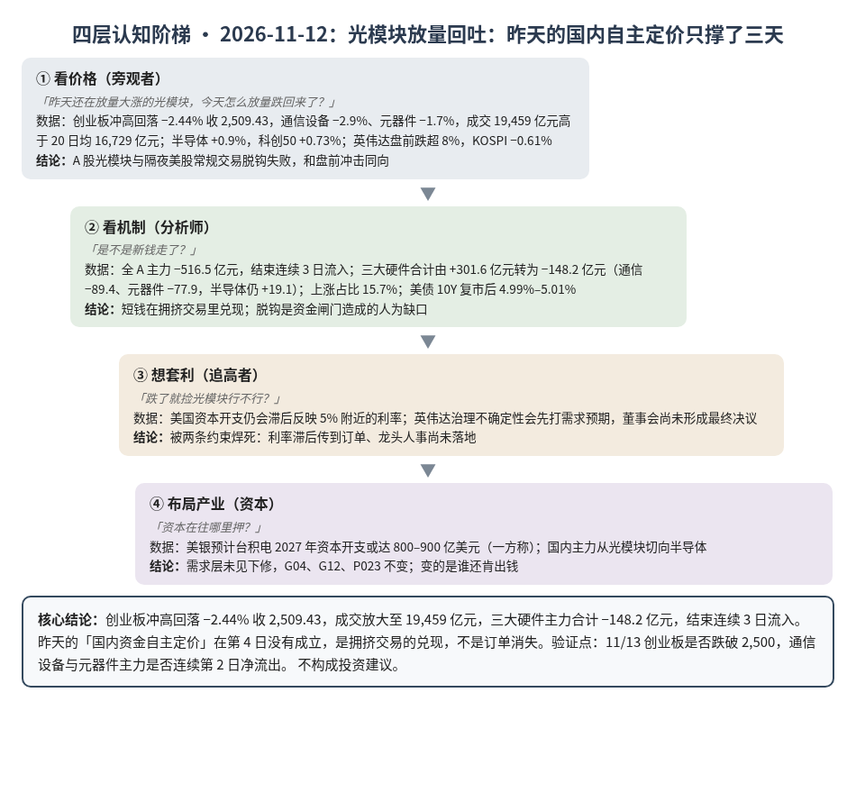
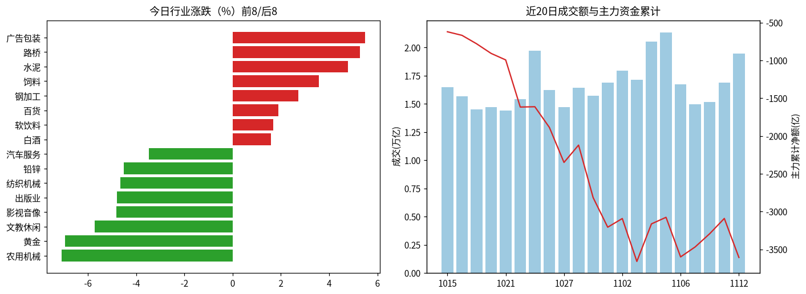
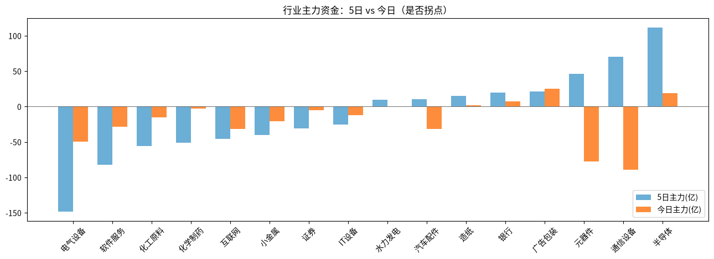

A股投研日报 · 2026-11-12（四层认知版）
- 主线
- 光模块高位放量回吐，昨天的国内自主定价只撑了三天
- 最重要变化点
- 创业板冲高回落 −2.44% 收 2,509.43，成交 19,459 亿元（20 日均 16,729）；三大硬件主力合计 −148.2 亿元，结束连续 3 日流入（通信设备 −89.4 亿、元器件 −77.9 亿，半导体仍 +19.1 亿）
- 机制含义
- 放量下跌是短钱在拥挤交易里兑现，不是订单消失；脱钩被证伪为资金闸门造成的人为缺口
- 下一个观察点
- 11/13 创业板是否跌破 2,500；若跌破且通信设备、元器件主力连续第 2 日净流出，短钱出清尚未结束
本报告为基于公开数据的研究分析，不构成投资建议。
今日市场概况
数据管道速览（Tushare 收盘数据，规则生成，正文判断见下文）
- 指数：上证指数 -0.67% 收 3,655.83，创业板指 -2.44% 收 2,509.43；深证成指 -1.68%、科创50 +0.73%、上证50 +0.24%、沪深300 -0.78%、中证500 -1.62%、中证1000 -1.97%（Tushare）。
- 量能与宽度：成交 19,459 亿元（20 日均 16,729 亿元）；上涨 875 家 / 下跌 4,635 家，上涨占比 15.7%，个股中位数 -1.6%。
- 主力资金：全 A 主力 -516.5 亿元，连续第 1 日净流出。
- 行业：主力流入居前 广告包装（+25.3 亿）、半导体（+19.1 亿）、银行（+7.2 亿）；流出居前 通信设备（-89.4 亿）、元器件（-77.9 亿）、电气设备（-49.4 亿）。
- 龙虎榜 / 北向：机构专用席位合计 -4.51 亿元；沪深股通成交前五 中际旭创、新易盛、寒武纪、东山精密、宁德时代（成交额≠净买入）。
变化点
方法：四层认知阶梯 + 历史周期律。数据 Tushare（见附录）。不构成投资建议。
一、世界观定位
阶段不变，回退条件不变。变化在楚汉层：美国钱继续贵（10 年期国债复市后回到 5% 附近），中国这边没有跟着紧。世界指标今日天气（今日更新尚未完成，沿用 11/11 读数）：整体多云：美股又贵又热，小心；钱开始变紧、AI 链有裂缝、中国经济还没回暖，留意。五盏灯本周没有变化。
二、变化一（主变化）：光模块放量回吐，昨天的脱钩在第 4 日没有成立
- 看价格：「昨天还在放量大涨的光模块，今天怎么放量跌回来了？」创业板冲高回落 −2.44% 收 2,509.43，通信设备 −2.9%、元器件 −1.7%；成交 19,459 亿元，高于 20 日均 16,729 亿元。半导体却 +0.9%，科创50 +0.73%。隔夜纳指 +1.62%、英伟达常规交易 +2.91%，但媒体称董事会拟更换 CEO 后，盘前跌超 8%；KOSPI −0.61% 收 5,342.73（源、源、源）。
- 看机制：「是不是新钱走了？」是。全 A 主力 −516.5 亿元，结束连续 3 日流入；三大硬件合计由昨天 +301.6 亿元转为 −148.2 亿元（通信设备 −89.4、元器件 −77.9，半导体仍 +19.1、连续第 4 日流入）。上涨家数只占 15.7%，是短钱在拥挤交易里兑现。美债现券假期后复市，10Y 早盘基本持平 4.99%，其后被报在 5.01%（源、源）；多只纳指 ETF 仍因溢价临停，出海通道没打开（源）。
- 想套利：「跌了就捡光模块」被两件事卡住：美国资本开支仍会滞后反映 5% 附近的利率；英伟达治理不确定性会先打需求预期，而董事会尚未形成最终决议（源）。昨天说的「脱钩」在第 4 日没有成立。
- 布局产业：需求层没有新的资本开支下修——美银预计台积电 2027 年资本开支或达 800–900 亿美元（一方称，源）。总账 G04、G12、P023 不变。国内资金从光模块挤向半导体，说明缺的不是「要不要 AI」，而是「哪一段还能被国内资金独自定价」。推断约束仍在机房、电和美国龙头，不在今天的股价。
判断：主要矛盾从「国内资金能不能长期无视美国利率」转为「短钱出清之后，半导体这一路的流入能否单独撑住」。今天证明昨天的放量是拥挤交易的兑现，不是基本面独立。
四、上一交易日验证点回顾（11/11 → 11/12）
| 验证点 | 结果 |
|---|---|
| 美债 10Y 收盘 ≥5.00% | 待验证：早盘 4.99%，其后盘中报 5.01%，官方收盘未出 |
| 三大硬件主力连续第 4 日为正 | 未命中：合计 −148.2 亿元 |
| 创业板收盘守住 2,500 | 命中：2,509.43 |
| 本周 DDR5 16Gb 跌破 59.66 美元 | 未触发：较上日持平（11/11 为 60.23 美元） |
五、供应链风险敞口（人工复核版）
脚本版见 risk_section_20261112.md。口径为 GB300/NVL72 当量柜年化系统价值；Δ$ 为事件类型假设模板，仅用于排序，非预测。脚本 2 条，误匹配 2 条。复核后有效断供 Δ$≈0，基线维持年化 EL 57.7 亿美元（10/21）。采集降级：GDELT 限流或 0 篇；巨潮公告匹配未恢复。
六、机会表（产业/环节层面，不构成投资建议）
| 环节 | 逻辑 | 证伪条件 |
|---|---|---|
| 光模块上游物料（DSP 等） | 整机交付仍卡在物料，议价权在上游 | 主要厂商称 DSP 不再紧张 |
| 追涨光模块整机 | 陷阱：昨天的放量已被证明是短钱兑现 | 通信设备主力重新连续流入且成交萎缩 |
| 半导体（国内算力芯片） | 资金从光模块切过来，待验证能否单独撑住 | 半导体主力转为净流出，或创业板跌破 2,500 |
中长期展望（3–12 个月与 2027）
3–12 个月：「钱开始变紧」「AI 链有裂缝」两问仍黄。今天证明 A 股 AI 硬件可以短期脱钩，也可以同样快地吐回去，订单仍来自美国；G04、G12 要看资本开支是否经得起 5% 利率和龙头治理扰动。
2027：P023（四大云 2027 资本开支 ≥8,500 亿美元，概率 0.55）仍是总闸门；美银称台积电 2027 年资本开支或达 800–900 亿美元（一方称），方向未改，但不替代四大云自己的指引。
什么会改变展望：①美债 10Y 站稳 5% 以上且任一大云下修资本开支；②英伟达人事落地并伴随供货或资本开支指引调整；③DDR5 现货单周跌超 3%。
七、明日/本周验证点（可证伪）
- 11/13 创业板收盘是否跌破 2,500。
- 11/13 通信设备、元器件主力是否连续第 2 日净流出。
- 美债 10Y 11/12 官方收盘是否 ≥5.00%（盘中已见 5.01%，收盘待补）。
- 本周 DDR5 16Gb 现货跌破 59.66 美元。

一句话总结：光模块放量回吐：昨天的国内自主定价只撑了三天。
本报告为基于公开数据的研究分析，不构成任何投资建议。
附录：市场数据（证据底稿）


| 收盘 | 今日% | 5日% | 20日% | MA20 | 成交(亿) | |
|---|---|---|---|---|---|---|
| 上证指数 | 3,655.83 | -0.67 | -0.92 | -1.39 | 3,672.71 | 8,795.37 |
| 深证成指 | 11,197.98 | -1.68 | -2.38 | -5.24 | 11,361.35 | 5,415.44 |
| 创业板指 | 2,509.43 | -2.44 | -2.24 | -9.84 | 2,571.38 | 2,343.06 |
| 科创50 | 1,309.84 | 0.73 | 1.80 | -3.65 | 1,277.52 | 1,173.08 |
| 上证50 | 2,772.07 | 0.24 | -1.39 | 0.25 | 2,767.47 | 1,365.63 |
| 沪深300 | 4,043.93 | -0.78 | -1.69 | -2.93 | 4,077.24 | 5,081.95 |
| 中证500 | 6,604.15 | -1.62 | -2.03 | -2.44 | 6,628.35 | 3,364.56 |
| 中证1000 | 6,537.84 | -1.97 | -1.69 | -2.11 | 6,546.03 | 3,830.58 |
行业资金热力（按5日主力净额排序，前8/后8）
| industry | 今日% | 5日% | 20日% | 今日主力(亿) | 5日主力(亿) | 资金连续天数 |
|---|---|---|---|---|---|---|
| 半导体 | 0.9 | 5.4 | 1.3 | 19.1 | 111.5 | 4.0 |
| 通信设备 | -2.9 | 6.8 | -16.2 | -89.4 | 70.2 | -1.0 |
| 元器件 | -1.7 | 4.4 | -7.5 | -77.9 | 46.0 | -1.0 |
| 广告包装 | 5.5 | 7.3 | 10.2 | 25.3 | 21.6 | 1.0 |
| 银行 | 0.4 | 2.0 | 2.9 | 7.2 | 19.5 | 1.0 |
| 造纸 | -1.9 | 0.9 | 2.5 | 2.1 | 14.7 | 9.0 |
| 汽车配件 | -2.9 | 4.8 | 19.3 | -31.3 | 10.6 | -1.0 |
| 水力发电 | -0.0 | 1.0 | -6.2 | 0.5 | 9.4 | 1.0 |
| 电气设备 | -2.2 | -2.9 | 0.4 | -49.4 | -148.2 | -2.0 |
| 软件服务 | -3.1 | -1.8 | 6.0 | -28.8 | -82.5 | -5.0 |
| 化工原料 | -2.6 | -0.9 | -3.6 | -15.4 | -55.8 | -5.0 |
| 化学制药 | -0.2 | -1.8 | 30.1 | -3.0 | -50.8 | -5.0 |
| 互联网 | -3.3 | 0.2 | 4.8 | -31.7 | -45.3 | -2.0 |
| 小金属 | -2.3 | -1.6 | -4.0 | -20.5 | -39.9 | -1.0 |
| 证券 | -1.0 | -3.2 | -5.4 | -5.2 | -31.2 | -8.0 |
| IT设备 | -2.0 | 0.2 | 1.0 | -12.2 | -25.4 | -1.0 |
市场情绪时间序列（近10日）
| trade_date | 成交(亿) | 上涨占比% | 主力净额(亿) | 个股中位涨跌% |
|---|---|---|---|---|
| 20261030 | 16877.1 | 16.0 | -391.8 | -3.1 |
| 20261102 | 17951.9 | 84.0 | 114.9 | 2.0 |
| 20261103 | 17150.9 | 37.8 | -568.2 | -0.7 |
| 20261104 | 20518.9 | 83.8 | 497.2 | 1.9 |
| 20261105 | 21351.0 | 87.4 | 86.9 | 2.0 |
| 20261106 | 16716.0 | 13.6 | -524.0 | -1.9 |
| 20261109 | 14945.5 | 40.2 | 132.1 | -0.3 |
| 20261110 | 15167.5 | 76.7 | 175.5 | 1.3 |
| 20261111 | 16886.9 | 63.5 | 201.5 | 0.6 |
| 20261112 | 19458.7 | 15.7 | -516.5 | -1.6 |
今日上涨875家/下跌4635家，涨幅≥9.8% 47家、跌幅≤-9.8% 20家¹。
龙虎榜侧写：机构专用席位合计 -4.51 亿；净买入居前 粤芯半导体(+5.14亿)、襄阳轴承(+2.12亿)、英力特(+0.87亿)，净卖出居前 上海电影(-2.43亿)、福莱新材(-2.23亿)、杰克科技(-2.07亿)。 沪深股通活跃股：成交前五为中际旭创、新易盛、寒武纪、东山精密、宁德时代（成交额≠净买入）。
注：¹涨跌停为按±9.8%阈值近似（limit_list_d无权限）。²行业为Tushare stock_basic分类自行聚合（sw_daily/ths_daily/行业资金流接口无权限），成交加权、剔除N/C新股，成分≥8只。³主力=大单+特大单净额（moneyflow）。⁴2024年8月起北向每日净买入停止披露，moneyflow_hsgt/hsgt_top10数值为成交口径，不可解读为净流入。⁵新闻/公告接口无权限，改用新浪财经7x24公开快讯自动抓取+人工补充。
接口状态：trade_cal:OK；stock_basic:OK；index_daily:OK；moneyflow_hsgt:OK；hsgt_top10:OK；top_list:OK；top_inst:OK；index_dailybasic:OK；新浪7x24(公开):OK 2795条（11-11 14:56 起）